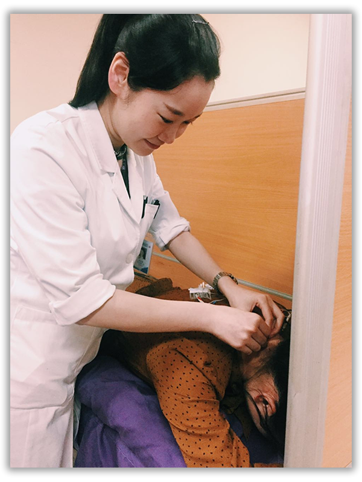
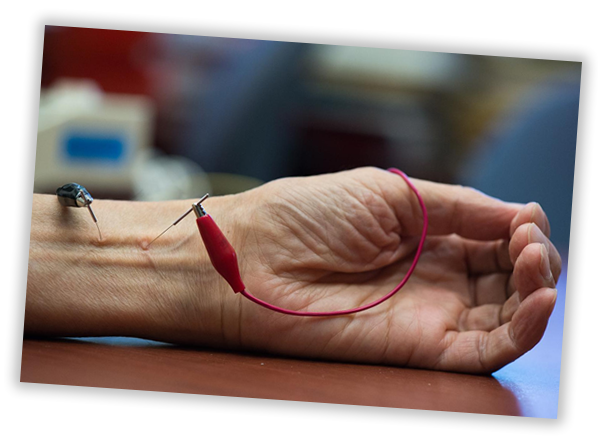
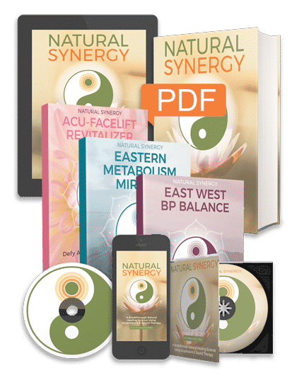
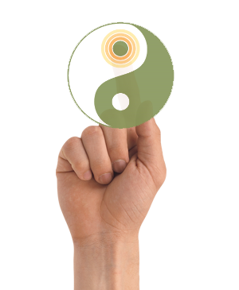
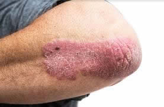
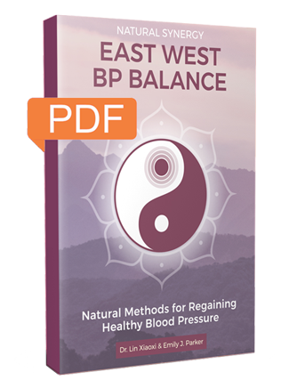
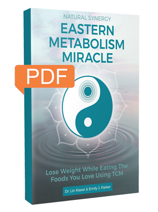
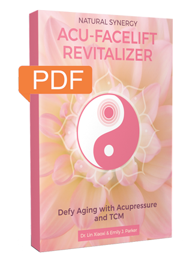
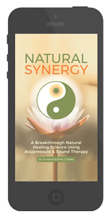
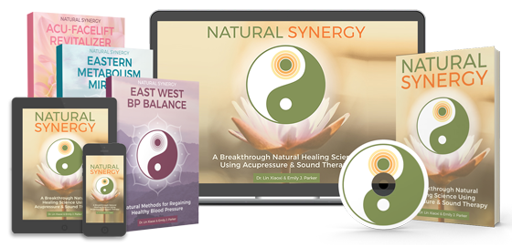

You're about to discover how both chronic and acute pain, skin conditions, migraines, and hundreds of ailments all stem from the same root cause.
Ailments such as:
- Chronic pain1
- Low Immunity2
- Chronic acid reflux/GERD3
- High blood pressure4
- Addictions5
- Fibromyalgia6
- Allergies7
- Osteoarthritis8
- Headaches9
- Low back pain10
- Asthma11
- Headaches12
- Depression and anxiety13
- And urinary problems14 to name just a few…
If you continue to ignore the root cause and only deal with the symptoms, you’ll never be free of your condition.
Leaving you chained to your medication... and that’s the way drug companies like it.
Western doctors treat the body as a collection of parts which they can treat or replace separately like a car.
But that’s totally opposite of Traditional Chinese Medicine that treats the entire body as a whole.
In fact, as I’m about to show you, the cause of an arthritic knee, an aching lower back, or blocked arteries has little to do with those parts of the body.
Pharmaceuticals can be a true blessing… But they can also be a curse… So why aren’t natural, proven alternatives more commonly prescribed?
Big Pharma has overrun Washington D.C.
There are, literally, two pharmaceutical lobbyists for every member of Congress.15
They have ‘their people’ in the FDA.
They write the medical books used in Universities.
So, it’s no wonder that your local doctor won’t prescribe you a natural remedy for your pain or ailment… it’s because doctors have been programmed to use their prescription pad!
A study published by Mayo Clinic revealed that 70% of Americans take at least one daily prescription medication. The same study showed that 20% of Americans are on five or more daily medications.16
These prescriptions cause side effects… and over a period of time, they cause serious health problems that require another daily drug. And another… and another.
This cycle is called: ‘prescription cascade’ (also known as ‘polypharmacy’) and it’s an epidemic that can take 10 years off the average life expectancy.
Retiree’s at most risk - Studies show that prescription cascade is responsible for accelerating the need for aged care… due to these common side-effects17:
- Decreased physical functioning
- Delirium and dementia
- Urinary incontinence
- Recurring falls
- Low immunity due to reduced ability to absorb vitamins and minerals
Hi I’m Emily J. Parker.
My mother was a victim of prescription cascade, and I was also travelling along the same path.
Side-effects from my medication would cause me to wake up every morning with a crashing headache and terrible nausea...
I'd lie in bed thinking, "how the heck am I going to make it through the day?"
“Is this what the rest of my life is going to be like now?”
I started to gain weight uncontrollably, and I was becoming more tired every day. I wanted to work out, but I was too exhausted from the medication.
One day I took a good look in the mirror. My eyes were yellow, bloodshot, and surrounded by dark rings.
"Life is going to pass me by if I keep living like this" I thought.
After three months of this torture, my body couldn't take it anymore.
Near death accident reveals healing force of nature
It was a Wednesday that altered my life forever.
I remember looking at my watch: it was 2.57pm… I was running late.
My prescription had made me feel nauseous and faint all day. And although every cell in my body told me to stay at home; I still had to go to school to pick up my daughter… and grab some pizza for dinner.
I was driving just three blocks from my house when I felt something start to go terribly wrong.
My vision blurred… sounds became distant… and I felt that something awful was happening.
I blacked out at the wheel. Like a bad dream, I woke up on a stretcher in an ambulance.
I was confused. My shoulder, chest, neck and back were pounding in agony.
My head was throbbing and in a painful fog. I could feel blood caked to my hair.
Long story short; my car had drifted left and ploughed head-first into a lady driving an SUV!
Luckily, there were no kids in the car, and her injuries were minor.
But I suffered severe whiplash, a fractured vertebra, two broken ribs, and my left collarbone was shattered.
All because of the side-effects of prescription pills...
... pills that were supposed to help me!
Just before being discharged from the hospital, my doctor asked me what would become a life-changing question.
"Would you like some medication for the pain?"
I begged; "Are there any natural alternatives?"
But the doctor kept sidestepping the question.
To shut me up, he told me my only option was painkillers.
I was astounded that he STILL wanted to shove pills down my throat; despite the irony that pills were the reason for my car crash in the first place!
So I said no... but I hadn't thought it through.
The pain was already unbearable, but I would have to tough it out and find another way.
My First Glimmer of Hope Toward Drug-Free Pain Relief
I tried physiotherapy and a chiropractor. However, after a string of visits, I wasn’t making any progress.
With my options running out; I listened to a friend of mine who swore by acupuncture...
But I HATE needles!
Still... I was desperate for even a small break from the constant pain. So, I forced myself to try it, just to see what would happen.
I was so nervous. The butterflies in my stomach were intense!
The therapist stuck some fine needles into my hand, back and face… the appointment was over in 60 minutes, and when I got of the bed, I was immediately surprised that my neck and back pain seemed less… much less.
I remember trying to locate what pain was actually remaining… but the pain was simply gone!
However, my renewed optimism didn't last long.
Within 24 hours, it all came back like a freight train of pain.
The hurt, sluggishness... and the restless nights.
At my next appointment, the acupuncturist told me I'd have to go three times a week if I wanted to end the pain completely. And it could take many months.
Unfortunately, my insurance only covered $500 worth of visits a year so there was no way I'd be able to afford that.
Plus, the time commitment of commuting to the therapist…
combined with my fear of needles - made it very difficult to continue the therapy.
That's when something incredible happened.
I reached out to apologize to the lady I had crashed into.
She wasn’t angry at me… in fact, she was sympathetic.
It turned out she lived locally, and her son went to the same school as my daughter.
I invited her to my place for coffee after she kindly offered to pick up and drop off my daughter from school until I got back on my feet.
Let me tell you - the next 2 hours changed my life.
When I told her about the temporary relief I'd found through acupuncture, she just smiled.
It turns out that she was a doctor of Traditional Chinese Medicine (TCM)...
Dr. Lin Xiaoxi. I had no idea that she was well-known in TCM circles in China.
Ancient Secrets, Modern Solutions

Dr. Xiaoxi is a leading practitioner in the TCM healing arts. She comes from a long line of prestigious Chinese doctors… but came to the U.S to train American therapists in the latest advancements in Chinese medicine.
"Yes," she said, “acupuncture is very effective, but it's not for everyone.”
"I have a similar method which doesn’t require needles, and you can easily practice it on yourself. All you need is the ability to hear and touch.”
She explained,
“When your energies are perfectly balanced, the body’s healing response is highly accelerated.
But modern lifestyle, stress, pollutants and overloading the body throws out the fine balance of our body.
She continued, "our body has energy lines called ‘meridians’ that connect and nourish each main organ of the body.
When energy blockages occur… pain and disease manifest."
Each meridian line is dotted with energy points… called acu-points.
In my home country of China, we have been practicing acupuncture and acupressure for thousands of years to stimulate these acupoints…
Stimulating acupoints restores proper circulation, and perfect balance of energy with our meridians.
Unleashing the full healing power of your body.
This extraordinary method sends a message to the central nervous system causing the release of pain-killing endorphins: noradrenalin, and enkephalin; which help to block the signal of pain to the brain. As well as: 'beta-endorphins' which have been found to be stronger than morphine.18
Dr. Xiaoxi went on to explain there are five key ways of unblocking these Meridian pathways:
- Needles, which is acupuncture.
- Heat also works but it is usually combined with needles.
- Electricity, called electro-acupuncture. By running an electric current through acupuncture needles, you can speed up the process, but it can be invasive. And most practitioners charge extra for it.

- Finger pressure, known as acupressure. It's a widely used practice that pre-dates all other acu-therapies.
- Meridian frequencies. With sound therapy, blocked meridian lines can be ‘reset’ using a process called ‘entrainment’.
Synchronize Your Energies Using Sound Therapy
To understand entrainment, you first need to understand that everything is sound!
Everything is in a state of vibration… if its vibrating, it’s putting out a sound… whether we can hear it or not.
Electrons moving around the nucleus of an atom…
Planets in distant galaxies moving around their sun…
Every part of the body is in a state of vibration…
When everything is healthy, we are in a state of ‘sound health’.
We are vibrating like a ‘perfect orchestra’… a symphony of health…
But what happens if the violin player loses their sheet music? They are playing out of ease… out of note… pretty soon the entire string section sounds ‘off’….
The body starts to vibrate out of ease… which is what we call ‘dis-ease’.
What if you could restore the right ‘sheet music’ to the violin player?... restoring the correct resonant frequency?
This is where the science of entrainment comes in…
Things that vibrate at similar frequencies require very little work to synchronize in harmony…
If a piano and a guitar were both in tune, and the note G was played on the piano, the G string on the guitar would also vibrate (so long as they are close together).
In this example, the string of the guitar absorbed the waves from the piano because it is tuned to the same frequency.
The sound of the piano caused the guitar to resonate with it.
This also happens if you’re holding two tuning forks… if you strike one, the unstruck fork will begin to vibrate too.
This is entrainment19.
Whenever there are similar frequencies, a weaker frequency will harmonize with the stronger frequency.
Entrainment is very common biologically…
Such as
- Women’s menstrual cycles synchronizing
- The resetting of the internal body clock after a very long plane flight
- Or fireflies that blink together at the same rate and time
It even occurs with your mood… such as ‘bad energy’. Have you ever been around someone who’s in a bad mood? Did their bad ‘vibe’ put you in a bad mood too?
Or being around people who are in a good mood… the crowds collective energy entrains you to a good mood.
With sound therapy, the objective is to entrain your low frequency to a healthier, higher frequency.
In the case of Dr. Lin’s therapy… the object is to entrain your unhealthy meridians to their optimum state.
"If you could eliminate certain outside frequencies that interfered with our bodies, we would have greater resistance toward disease.” - Nikola Tesla
Unfortunately, our body can also be susceptible to entrainment of unnatural, harmful frequencies.
Electromagnetic frequency radiation (EMF) is an example of these unnatural frequencies and is found almost everywhere such as Wi-Fi routers, cell phone towers and electrical appliances.
These things disrupt our natural energy flow, causing energy blockages within our meridian systems. Energy blockages then manifest in our bodies, as pain or disease.
Acupressure Combined With Meridian Frequencies. A Non-Invasive Alternative to Electro-Acupuncture
This process of combining acupressure with meridian frequencies, Dr. Xiaoxi calls: Acu-FrequencyTM
She explained that when you combine two acu-therapies, there's a synergistic interaction between them that makes them exponentially more potent than either treatment on its own.
This is why electro-acupuncture is such a popular acu-therapy in Chinese hospitals… The synergy of TWO stimulants is like pressing your body's 'natural reset button'
Acu-FrequencyTM works the same way as electro-acupuncture… minus the electrified needles!
But here's the really amazing part: Since you can do it yourself, you’re not limited by how many treatments you can afford or how many appointments you can get to each week.
And it's the ideal therapy for someone like me who's afraid of needles.
Or for someone who doesn’t want to spend thousands of dollars and doesn’t want their life revolving around the next appointment.
Dr. Xiaoxi told me that she has step-by-step instructions for a vast range of pains and common ailments:
- Locating specific acupoints
- How to execute them
- Plus, how to match the correct meridian frequencies with the right exercises
I remember the first night after we met, and she gave me some instructions...
I followed a few of the sequences to see what would happen. The first technique I learned was "Soldiers Black Spice" for general pain. Before I'd even finished the sequence, my pain was already receding into the background.
I was blown away!
My Pain Was Just... Gone!
It was like acupuncture but turbo-charged, I could do it pretty much anywhere, anytime.
I practiced my exercises while shopping, at the bus stop, lying in bed, or watching TV.
In just over a week, I no longer needed my walking stick.
I was even able to use her techniques to quit my blood pressure medication… the reason for my accident!
I'd Finally Broken the Chains of Medication!
My health had been reclaimed. A beautiful gift I thought I’d lost forever!
I was so grateful to Dr. Xiaoxi and asked her how I could repay her.
She handed me an old, worn leather-bound book. They were her notes from her life’s work. She wanted me to re-write them in proper English so that others could feel the pain relief, not just her immediate patients.
It took nearly two years to translate her notes, format the system, and pull everything together to make the program easy to use, and to yield the fastest results.
And finally it's here…
I’m honored to share the results with you. It’s called…
NATURAL SYNERGY
A Breakthrough Natural Healing Science that Combines the Power of Acupressure with Frequency Therapy
It's a powerful program that can teach anyone how to heal themselves, at home using nothing but their fingers and specific sound frequencies.
Here's What You Get:
The Natural Synergy System
This revolutionary program is the masterworks combining sound therapy (entrainment) with acupressure. It's a complete instruction program of what you need to know and how to perform various healing techniques.
You don’t need to know anything about TCM, acupressure or sound therapy.
You only need the desire to be healthy and pain-free.

With over 150 different pains and ailments to treat – simply look up the ailment in the alphabetically ordered index and begin acu-therapy.
Everything is laid out with diagrams and checklists to make it easy to read and apply.
You don’t need a medical degree - anyone can do this!
It includes:
Part 1 — Hidden Secrets to Unlocking the Power of TCM.
Step-by-step instruction combined with easy to follow diagrams will show you how to put these powerful techniques into practice for rapid healing.
The system is equipped with ‘fool-proof’ formatting to make it easy to find the last place you left off just in case you need to revise what you’ve learned.
Part 2 — Explains everything you need to know about how sound works to heal the body and how you can use it to treat yourself.
Part 3 — Acupressure Treatments for Everyday Conditions — You'll see how to use acupressure to treat over 150 specific ailments and diseases from chronic pain to depression and anxiety.
Plus Meridian frequencies (entrainment frequencies) — High quality audio and diagrams for all 14 meridians in the body.
Our health depends on free-flowing circulation of energy throughout our meridian lines.
These meridian frequencies can dissolve blockages by synchronizing unhealthy meridian lines back to a healthy natural state.
This section is equipped with all the entrainment frequencies needed to get your health back on track - quickly.
Also, there's a bonus list of proven frequency therapy tracks that are commonly used by sound therapists and energy healers. Such as:
4 Binaural Brainwave Beats, 6 Solfeggio Frequencies, and 2 Universal Frequencies (The Schumann Resonance & The Om Frequency).
Each of these tones works together to balance your energetic body and keep mind and physical body in harmony.
Who Can Benefit From Natural Synergy?
This program was created for people who want to treat pain or disease at its root cause - rather than masking the problem with drugs.
Natural Synergy can help anyone who is suffering from:
- Low immunity
- Chronic pain
- An ongoing disease
- Addictions
- Fertility & menstrual issues
- Anxiety & depression
The Natural Synergy Guide lists over 150 of the most common ailments, the precise acupressure points and meridian frequencies, and how to easily use them.
You can experience a quality of life that may be unimaginable to you at the moment.

If I can go from a depressed, pill-popping zombie to the best I've ever felt in my life, you can too!
Finally, heal the root cause of your pain, disease, and unhappiness... I'm talking about a commitment of just 3 minutes a day.
"I must say that your approach works miracles for me.
Real acupuncture hurts too much, and you offer the perfect solution for home treatment.
I suffer from fibromyalgia, spasmophilia and chronic fatigue syndrome, maximum score on the first two.
I’m now off all opioids and most of my benzodiazepines.
Your program is groundbreaking! Thank you ever so much."
"I have used Natural Synergy to relieve pain in my knee, relieve discomfort in my teeth and boost my immune system and am convinced that the system works. Sometimes you don't even need to work on all the points!"
"I am super impressed, best purchase and value for money I have made in the field of health as I'm a clinical nutritionist and herbalist. I just wanted to share how happy and delighted I am with the program and the app is simply amazing, so much value here for the money. The book, pictures and guidance in application is so valuable that I'm sharing it with everyone who comes into my clinic.
Once again thank you so much for this wonderful gift."
"A short while ago, my wife woke up one morning with a frozen shoulder. My experience as a naturopath is that this usually takes quite a while to resolve using a mix of treatments. This time, I did the acupressure and frequency sounds on all 6 of the points for 3 minutes each – once only. The following day, my wife woke up with no pain, discomfort or movement restriction.
That was around a month ago, and since then, no recurrence …
Magic, yes?
Thank you so much for this program."
"The concept of a dual benefit from Acupressure combined with the Entrainment Concept is so unique.
The Binaural and others beats/ Audios combined make it awfully good and relaxing during the day and night too, while sleeping.
I am an RA (Rheumatoid arthritis) sufferer for the past two decades and sleep was totally deprived because of constant pain all over, BUT, i must say these audios helped me most.
Was surprised when other members of my family (in other rooms) came up to me playing these beats and said, 'What music is this? It is so soothing and really relaxes you'.
Thanks for this."
"Natural Synergy is a serious program of self help in healing. Sometimes it offers relief very soon or right after application of the suggested action, in cases of pain or in cases of mild discomfort. I also found it especially helpful in cases of seasonal dizziness I experience recently. I keep this program in high esteem because of its helpfulness to me. Also, I appreciate the clarity of the way it is presented and the fact that it is easy to use. I wholeheartedly recommend it and confirm that it is immediately applicable: no need of preliminary knowledge or study, just read the instructions. Of course, one can also appreciate the introductory chapters of the book, especially if one is not familiar with Chinese Medicine, meridians, acupuncture and the properties of sound frequencies. Thank you for creating such a wonderful program!"
"Our son was diagnosed with schizophrenia 13 years ago.
This is the first combination of your acu-frequencies we were using.
I have steadily been playing the combination of Binaural beats, ethereal, Triple burner and Joy.
This combination for the last week, on an off throughout the day.
Today he just made an off the wall, comment as we were visiting.
He said you know mom I feel different. I asked him how the only thing he would say is I am more aware of what is going on around me and I feel safe.
Those were the best words I have heard from him during the last 15 years.
Thank you for making this tool affordable.
I asked him if he liked the music I was playing for him.
He stated that is when he feels like himself, the voices are not in his head while he is listening to the music and he feel peaceful inside.
I am recommending you to other families who could use this.
Please keep on your path's work. You are doing outstanding :)"
Here are just a few of the methods you'll discover within Natural Synergy:
These powerful techniques may seem 'funny sounding' - but have been translated from ancient text.
馴風
"Taming Wind"
strengthens the organs that govern the immune system, ensuring the best defence against cold and flu. This protection means you might only experience a sniffle, opposed to the prospect of feeling like you’ve been hit with a ton of bricks
彎曲的池塘，微笑的菩薩
"Crooked Pond, Smiling Buddha" - Arthritis Relief
It's an extremely efficient method for arthritis relief. Use this effective technique to melt away stubborn soreness anywhere, anytime.
少女嫁妝
"Maidens Dowry" - Chronic Fatigue Syndrome Relief
This series of techniques gives you that source of natural energy you had when you were young. Maiden's Dowry is an excellent solution to Chronic Fatigue Syndrome.
月影移位
"Moon Shadow Shifting" - Insomnia Relief
Sleep soundly and wake up refreshed with this natural relief from insomnia. Go to bed with ease and rest all night.
龍的逃生
"Dragon's Escape" - Quit Smoking
Quit Smoking. Even though this methodology was initially formulated centuries ago to relieve opium addiction, it still works equally well for quitting cigarettes or other habits.

憤怒的小蛇，愛的少女
"Angry Snake, Loving Maiden" - Skin Problem Treatment
This formula is perfect for psoriasis, eczema, and acne relief.
醉猴的早餐
"Drunken Monkey's Breakfast" - Hangover Relief
The perfect cure for a hangover. This combination of techniques cures not only your headache but also nausea that comes with it.
偷來的種馬的獎勵
"Stolen Stallion's Reward" - Treatment for Impotence
A combination of techniques that targets the physical and the mental roots of impotence problems.
士兵黑色香料
"Soldiers Black Spice" - Strong Pain Killer
Suitable for general pain. Frequently used by acupuncturists and holistic healers for general anesthesia anywhere in the body.
破牛，哭泣的農民
"Broken Oxen, Weeping Farmer" - Back Pain Relief
Get long-lasting relief for strong back pain. Combine these points with "Soldiers Black Spice" for optimum relief.
皇帝的第三隻眼睛
"Emperor's Third Eye" - Treatment for Depression
Relieve depression by stimulating anti-depression points and promoting a healthy circulation of Qi. The second step involves pressure points that allow negative feelings rise to the surface and dissipate.
被遺忘的花園，幸運的兔子
"Forgotten Garden, Lucky Rabbit" - Sharpen the Mind
Increase memory and concentration. Mental sharpness does not have to get worse with age. The mind is a not a vessel to be filled but a fire to be kindled.
These incredible techniques are only a very small fraction of the ailments you can target using Natural Synergy.
Here are a few other techniques you'll learn.
"Dawn of Blooming Lotus" apply these techniques at the optimum time of the day for increased fertility.
"Twisted Rope Release" which will finally free you from the grips of anxiety, stress, and tension.
"Cracked Watchtower Bell" relieves blinding headaches and migraines without ever having to reach for a pill.
Or "Calming Dragon's Wrath" to eradicate nasty heartburn and reflux for good.
All of these methods can be used effortlessly in
just 3 minutes a day!
I am so confident that Natural Synergy will work for you, that I am giving you an iron clad 100% no questions asked, MONEY BACK GUARANTEE for 60 days!
Dr Lin Xiaoxi’s Natural Synergy System comes with an unconditional, 100% money back guarantee.
Try out the system for a full 60 days with absolutely no risk.
You will see for yourself how quickly it erases strong pain and accelerates healing.
Once you have started using the Acu-FrequencyTM techniques, I'm confident that you will NEVER want to look back!
By opting for a natural approach to your health, you’ll feel younger and more energetic than you have in years.
You’ll be pleased with the results or we will make it right, guaranteed.
Just send me one quick email and I will refund your payment on the spot!
60 Day Guarantee. NO QUESTIONS ASKED!
- No strings attached
- No forms to fill out
- No need to make any excuses
- No waiting
And as a gesture of good will, you keep everything…
I’m taking all the risk here… realistically, there’s nothing stopping you from buying the system with the intention of getting your money back and keeping everything… but I trust you won’t do that to me.
So rest assured, you’re completely covered, no matter what!
CERTIFICATE OF GUARANTEE
60 Day 100% Money Back Guarantee
Try the Natural Synergy System for yourself for a full 60 days!
If for any reason you are not happy, you can get a full on-the-spot refund, no questions asked, no waiting for ‘business days’ to receive your money back!
Simply email me, and your request will be processed straight away.
Emily J. Parker & Dr Lin Xiaoxi
Co-creators of the Natural Synergy System
Are You Ready To Take Back Control Of Your Health?
Natural Synergy was created specifically for you and your loved ones suffering from a wide range of common ailments, strong pain, and emotional disorders.
So, by now, you're probably wondering, "Emily, how much does it cost?"
I'm going to reveal that in just a second...
First, I want to provide even more tools to ensure your success…
That’s why I’m adding 3 EXCLUSIVE BONUSES just for you.
Bonus #1: East-West BP Balance — Acupressure for Regaining Healthy Blood Pressure (Value $39) FREE

Are you aware that one-in-three U.S. adults6, (about 75 million), have high blood pressure?
Americans spend an average of $1,112 per person, per year, on drugs that are unnatural and harmful for the body. And in many cases do more harm than good.
In the East-West BP Balance, you’ll find proven ways to treat your blood pressure without expensive or risky of medications.
This 142-page goldmine of information is broken down in two parts. Part one is the Western methodology of naturally treating high blood pressure and part 2 is the Eastern methodology.
Some of the incredible solutions discussed include:
- 42 Super fruits, veggies, herbs and spices that have been clinically proven to naturally fight high blood pressure – p. 40 - 48
- Acupressure points to harmonize the heart, side-effects include: relief from depression, anxiety and insomnia – p. 78
- Acupressure points to relieve stress and calm the mind which drastically lowers BP – p. 92
- Fighting free radicals, a cause of high blood pressure – p. 23
- Easy-to-follow steps and diagrams using TCM that correct High Blood Pressure at its root cause - p. 71
This book can save you a lifetime of struggling with blood pressure, as well as dangerous and expensive medications.
Imagine what it could feel like the next time you get your BP checked and your doctor says he hasn’t seen numbers these good in years!
The system is filled with easy-to-follow diagrams, pictures, and delicious recipes that will make your transition to healthy blood pressure as easy as 1-2-3!
Break free from your toxic BP medication - which never cures the problem.
Instead, take control of your health using natural Eastern medicine and well-researched Western remedies to attack the problem at its root cause.
"I can tell you that after using the Blood Pressure balancer for quite a while, I have lowered and kept my 190/90 High Blood Pressure down to a mean 135/67-145/70 Pressure, without any drug...that is quite good for a 81 year old man, is it not !!!...thanks to you..."
Bonus #2: Eastern Metabolism Miracle — Lose Weight While Eating What You Want Using Acupressure (Value $49) FREE
We all need help with weight control. However you may be surprised to know that it’s not about what you eat, but when!
This 79-page, Eastern Metabolism Miracle covers how you can control your weight using acupressure and metabolism boosting techniques.

- Calorie requirements: Different bodies, different needs. How conventional weight loss advice is counter productive - p. 10
- Easy-to-follow acupressure points for consistent weight loss - p. 44
- Logging your way to a lighter you. How journaling can help you pinpoint specific foods that are derailing your progress - p. 37
- Harmonizing the Spleen & Stomach for optimal digestion. Discover how the Spleen plays a vital role for optimum digestion and a faster metabolism - p. 49
- Metabolism Myths: Fact vs Fiction. Discover the myths that are sabotaging your weight loss, while kickstarting your body to burn fat like you’re a teenager again - p. 12
- Knowing the right nutrients for profound fat burning - p. 23
Using a simple acu-sequence, you can lose the weight and keep it off by:
- Boosting your metabolism
- Balancing your appetite
- Regulating your digestion, insulin, and hormones
While still enjoying the foods you love.
Bonus # 3: Acu-Facelift Revitalizer — Defy Aging with Acupressure by Stimulating Youth Meridians (Value $29) FREE
When we think of improving our appearance, we concentrate on the skin and muscles in the face. However, the root cause of sagging skin, spots and dark circles stems from deeper issues in the organs.
This easy-to-follow 153-page system shows you the acupressure points to the three organs that are directly related to a youthful appearance and younger looking skin.

- Chapter 1 - The Kidneys - the Gatekeeper of Youth. The Kidneys are the organs most critical to slowing the aging process. This chapter shows you the exact points to press to nourish your kidneys. It only takes 20 seconds a day! You’ll be shocked to know these pressure points are nowhere near your kidneys.
- Chapter 2 - The Lungs - The Forgotten Fountain of Youth.
When the Lungs are out of balance, it causes premature aging. “Unhappy” lungs create thin, papery skin, fine lines, and wrinkles. You’ll discover:
- Acupressure Points for Cooling and Moistening the Lungs
- Foods for rejuvenating the Lungs
- Gua Sha Facial Massage - an exciting, ancient facial technique that circulates stagnant energy and stimulates microcirculation of the soft tissue, which increases blood flow.
- Using a Jade Roller to help de-puff, firm the skin, increase circulation, and decrease inflammation.
- Chapter 3 - The Spleen - A Vital Key to the Beauty Puzzle. The Spleen plays an important role in keeping the muscles firm and strong. It works against gravity to hold everything in place including your face. If it becomes imbalanced, skin and muscles begin to droop and sag. This chapter will show you how to use acupressure points to invigorate the Spleen, tighten the skin and firm up the facial muscles.
- Chapter 4 - Putting Together Your Cosmetic Acupressure Routine. Learn a step-by-step beauty acupressure routine that you can easily apply when you have free time.
- Chapter 5 - Your Daily Beauty Routine. Now that you know your pressure points and have an acupressure routine, it’s time to incorporate them into an overall beauty routine. You get 44 pages of full-color photos of the pressure points for not only facial beauty but your overall health.
- Chapter 6 - Five Fantastic Facial Masks from the Kitchen. You get complete easy-to-make recipes for fantastically revitalizing facial masks.
This exclusive bonus is a proven step-by-step blueprint that teaches you how to defy the aging process by using acupressure and ancient Chinese secrets.
You may have read about A-list celebrities using cosmetic acupuncture to keeping sagging eyes and jaw line jowls at bay. Jennifer Aniston, Gwyneth Paltrow, Angelina Jolie, and Jennifer Lopez are just a few stars that swear by its rejuvenating powers.
With ongoing treatments charging up to $300 per session, and the pain of needles, only the rich and famous can afford this treatment. That is until now.
This do-it-yourself acupressure beauty blueprint is painless and is just as effective!
The information in this book alone has saved me hundreds of dollars in facial serums and concealers that I no longer need.
"In my mid thirties; I slowly watched my face inherit the pronounced jowls my mother had. So when I bought natural synergy, I was very interested to see what acu-revitalizer would do for me. My sister mentioned the difference first, then eventually my husband. Since then I’ve followed the beauty advice daily and my jowls look much softer!"
These three incredible bonuses are exclusive to Natural Synergy. You can't get them anywhere else and together, are worth $117! The Natural Synergy Guide alone usually retails for $299, and we’ve sold hundreds at that price.
The entire Natural Synergy program PLUS all those incredible bonuses have a combined worth of $416.
But you won’t pay anything near this price!
I know what it's like to have depressing health issues and limited finances. That's why I’m offering the entire Natural Synergy package at a MUCH lower price.
You don’t have to pay $416. You are not even going to pay $50!
I want to give people an affordable option to kill pain naturally... without the fear of addiction.
Treating the root cause of common diseases
And reducing the need for harmful prescriptions that come with problematic side effects.
So you'll get everything for just $47. That's it.
Scroll down and click the ‘Add to Cart’ button below... and in seconds, you'll have complete access to:
- The Natural Synergy System (original price $299)
- BONUS #1 - East West BP Balance (valued $39)
- BONUS #2 - Eastern Metabolism Miracle (valued $49)
- BONUS # 3 - Acu-Facelift and Revitalizer (valued $29)
- PLUS - SUPER BONUS (valued $29)
Limited time added discount: $47
(This offer expires in less that six hours)
Having been seriously ill myself, I know that your health is the most valuable thing you can possess. Without health, a billionaire can be the poorest person on your street.
Right now you have a risk-free opportunity to invest in your health - But its for a limited time.
BUT WAIT! We’re giving you an invaluable tool that you’ll absolutely LOVE!
SUPER BONUS — The Natural Synergy App (Value $29.99) FREE
Our members are raving about this app! It is the perfect companion to the Natural Synergy System.
The Natural Synergy App is a professional sound therapist in your pocket.
This will enable you to experience relief from many different pains and ailments and discover true holistic peace and happiness, even without the full Natural Synergy System at hand.
It comes with over 100 different ailments to treat plus over 100 professionally recorded therapeutic tones including:
Features:
- 45 Different ambient nature tracks that can be mixed to your personal liking such as:
- Rainforest sounds
- Ocean shore
- Forest at night,
- Wind chimes
- Dawn jungle
- Soft hypnotic natural sounds of nature
- And many, many more!

- 12 preset binaural beat entrainment tracks that have been mixed with hypnotic music.
- 35 ambient tracks to be used as a meditative or relaxing tool, or to be mixed (using Natural Synergy's mixer) to create your own personal healing tracks.
- Quick access to acupressure instruction for over 400 acupoints.
- An alphabetical list of 100 different pains and ailments with simple instruction for relief using Acu-FrequencyTM.
- 14 different meridian frequencies to be used while applying acupressure or mixed with other healing tracks.
- 6 healing Solfeggio tones - each Solfeggio tone is comprised of a frequency that balances your energy and keeps your body, mind and spirit in perfect harmony.
- 4 Binaural brainwave tones - designed to tune your conscious to beneficial brainwave states for heightened creativity and focus.
- 2 universal tones for mental and physical well being (the OM frequency and the Schumann resonance).
Used by high priced healing spas, yoga instructors and sound therapists, the Natural Synergy App is more than an effective healing tool for the mind.
Sound therapy helps restore the body to optimal health, balance and function.
Using the science of entrainment, the Natural Synergy App uses the Vagus nerve to transmit therapeutic frequencies to the body’s organs and tissues, promoting healthy cell function and supporting the body’s natural healing abilities.
"I've been using the natural synergy app for a few short days now.
I’m finding myself having better meditation with it, as well as less pain from fibromyalgia.
Thank You for creating this app!
I know as I continue to use it my health will continue to get better."
"I have used the app many times, it is easy and so helpful. I have it on my phone, and use it in my classes. I teach Qi Gong / Tai Qi in senior centers. There are always questions about their ailments and what they might do for themselves. I whip out my phone and give them a pressure point they can use. The folks so appreciate having and seeing something with a picture and seeming just for them. Great app!"
"The Natural Synergy app is great. I really enjoy it. I'm able to enter a relaxed state so much easier, and my meditations are more insightful. Sleeping, I can experience a lot more lucid dreams.
Thank you Natural Synergy"
As both Apple and Google only give a limited number of free codes to give to our members, the app will not be available for free forever so make sure you join today!
Here’s the tough truth you probably already know. If you want different results you need to do something different. Make a definitive decision right now to get different results.
On average, Americans spend $1,200 a year on prescription drugs… for just $47 you can potentially save over $1000 in the first year alone!
With a 60-day money back guarantee, there’s zero risk. Get MASSIVE savings from the combined package value of $446 and pay:
JUST $47
Click the button below
Add To Cart For $47
"My back pain was GONE! I am in AWE of this program. I love this program and app! Even when I am not able to do all of the acupressure points because I'm out running around, I will listen to the coinciding meridian sounds specific to my ailment and much to my delight, I find relief! I'm very active and suffered two back injuries years ago that continue to cause me pain on occasion. This pain never goes away in its own and requires a trip to the chiropractor which I don't always have the time for. I had been suffering the pain for several weeks when I purchased Natural Synergy. While at work the other day, feeling much pain from a workout the previous evening, I decided to listen to the meridian sounds related to back pain. Before I had even finished them all, my back pain was GONE! This truly has never happened! It's been two days and the pain has not returned! But just for good measure, I listen at least once a day...
I am in AWE of this program. Thank you Natural Synergy!"
"Natural Synergy worked for my skin problems. Eczema i had for years. When i feel it coming on i apply the pressure to the different points on my body a few times per day and it keeps eczema from becoming a problem. Now its been a few months since i had any problems.
I am very happy i bought the products."
"After suffering insomnia for many years, I came across Natural Synergy, and to say that my life has changed would be an understatement. I am amazed that by using something so simple as acupressure I can sleep for a full eight hours without waking. I now feel totally refreshed when I wake up and have more energy throughout the day."
"Not only is customer service awesome with Natural Synergy, but their program is absolutely the BEST! When you receive natural balance for your body, have it be noninvasive and inexpensive you have a winning formula and Natural Synergy has that formula! The format is easy to follow, and the in-depth content is phenomenal!
I have purchased and used similar programs, but this one is my favorite by far. You can’t go wrong when you purchase their program!"
"I can't believe the amount of information that was immediately available once my purchase was completed. It is so comprehensive but so easy to read and the information is invaluable. I can see Natural Synergy to be such a blessing to myself and my family. It has a beautiful energy surrounding it. Even though I have only just purchased it, I have already used it to rid myself of a headache. Yay. I know if I have any questions I can confidently contact you and know i will receive and answer. I know the support is there and it is so encouraging to feel this.
I love it and can't thank you enough for this system to be shared with the world."
"Before using Natural Synergy (NS), I was taking my medication (maintenance) for my blood pressure on a daily basis. At the first month of using NS daily, I didn’t stop my medication yet. But on my 2nd month of using NS, I gradually refrain using my high blood medication on a daily basis. On the 1st week of my 2nd month of using NS, I took my medication every other day. On my 2nd week of my 2nd month of using NS, I took my medication twice only. On my 3rd week, I took my medication only once. Finally, on my 4th week, I tried using your Natural Synergy without taking even a single medication.
Luckily, for 10 months now, I’m practicing your Natural synergy without taking any of my medication at all. In other words, I’m now free from taking my medication!
Not only that. Every time I feel sick, I listen to the Theta Healing preset beat and the 528 Hz and Schumann Resonance frequencies. I easily get well and feel great again. Sometimes, even if I had only 3 hrs of sleep if I listen to those frequencies before retiring to bed, I felt like I had 8 hrs of sleep. They are really amazing!
Regarding the acupressure with corresponding audio, using my fingers or my acupressure pen in pressing the acupressure points, I noticed that the effect is the same. But I prefer using my acupressure pen for convenience.
For 10 months now, NS has become my healing companion. I even use it to other people. I became an instant Healer!
I’m really grateful to you Emily for sharing to us your Natural Synergy.
Thanks again, Emily! God Bless you!"
"In my reading I was led to Natural Synergy which provided not only a wealth of information, but the addition of a 'application' that addresses wave frequencies and their specifically targeted areas where they can be applied to healing, along with sounds that achieve those frequencies that you can use by listening or applying acupressure therapy. I could read all kinds of books on various topics, and did, but Natural Synergy Application serves as a portal to reference information and actual tools, along with information news as new research yields results.
My investment is well worth the available tools and information. If any of the above, or all of the above intrigue you, I recommend Natural Synergy to you. Whether the reference set, the tools, the blog and/or updates...each is worth the investment alone.
I am just over 60, generally lean a bit more on the conservative side. I have an open mind and readily embrace the incredible long standing components as well as emerging information and tools available at this fortunate time."
"I used the Natural Synergy protocol on my patient for eczema twice weekly for 3 weeks together with a change of diet. Result was excellent. Patient recovered fully."
Doctor of Natural Medicine, Doctor of Humanitarian Services, Doctor of Integrative Medicine. Doctor of Chinese Medicine & Acupuncture, Qigong Medicine
I would love to hear your personal story of how Natural Synergy helped you. Please email me and let me know.
Yours in health and happiness,
Emily J. Parker
P.S. This course is an electronic course, so you can download it and start straight away. There's no shipping involved, and you get instant access! Remember, this heavily discounted price of $47 won't be around for long. Get it while you can.
FAQ's
Below are some answers to good questions people have asked about Natural Synergy:
Can I still expect good results if I only use acupressure and not the meridian frequencies?
Definitely. Acupressure has remained popular for thousands of years because it works.
How do I know which meridian frequency to use?
The Natural Synergy Guide displays each entrainment frequency next to each series of acupressure techniques.
What is acupoint therapy?
Acupoint therapy is where you stimulate particular acupoints, also known as meridian points, to get relief from pain or ailment. Because we can stimulate these points using various means such as pressure, needles, electricity or sound frequencies, the umbrella term for it is "acupoint therapy."
I have never heard of "entrainment" before. Why is that?
There are many scientific and medical terms that you may never have heard before. That doesn't mean they don't exist, you were not aware of them, and that's natural.
Entrainment is "a synchronization of 2 or more rhythmic cycles." For example, if you take a tuning fork and strike it, then move it towards another tuning fork, the unstruck fork will begin to vibrate in harmony too. That is entrainment, and it works with the different energies and meridians in the body.
What should I expect when I use Natural Synergy?
There will be a broad spectrum of relief depending on the individual and the symptoms. Results can differ depending on whether you use only the acupressure, the entrainment frequencies or if you combine them, which is ideal. Most people will feel instant relief on some level.
Another variable to consider is sudden pain vs. chronic, ongoing pain. If you suffer constant pain, you will experience instant relief, but it will eventually dissipate. Schedule regular exercises until the pain become less frequent and finally ceases.
I hope this FAQ helps answer your questions. Are you ready to alleviate pain naturally, at home? Order below.
JUST $47
Click the button below
Add To Cart For $47The Food and Drug Administration has not evaluated these statements. Always consult your physician before beginning any diet or exercise program. This product is not intended to treat, cure, diagnose, or prevent any disease. Please Note: The material on this site is provided for informational purposes only and is not medical advice.
Citations:
1. https://www.ncbi.nlm.nih.gov/pmc/articles/PMC3947586/https://academic.oup.com/bjaed/article/7/4/135/466586
https://link.springer.com/chapter/10.1007/978-3-642-10857-0_5
https://www.evidencebasedacupuncture.org/pain-2.
2. https://www.ncbi.nlm.nih.gov/pmc/articles/PMC4540978/
3. https://europepmc.org/abstract/med/27323443
4. https://pubmed.ncbi.nlm.nih.gov/32186048/
5. https://www.ncbi.nlm.nih.gov/pmc/articles/PMC2529396/
6. https://www.ncbi.nlm.nih.gov/pmc/articles/PMC6365227/
https://www.ncbi.nlm.nih.gov/pmc/articles/PMC4105202/
7. https://pubmed.ncbi.nlm.nih.gov/25590322/
8. https://www.hopkinsmedicine.org/health/wellness-and-prevention/acupuncture
9. https://www.hopkinsmedicine.org/health/wellness-and-prevention/acupuncture
10. https://www.hopkinsmedicine.org/health/wellness-and-prevention/acupuncture
11. https://www.hopkinsmedicine.org/health/wellness-and-prevention/acupuncture
12. https://www.hopkinsmedicine.org/health/wellness-and-prevention/acupuncture
13. https://www.sciencedirect.com/science/article/abs/pii/S187638201630124X
https://pubmed.ncbi.nlm.nih.gov/27355312/
14. https://pubmed.ncbi.nlm.nih.gov/28655016/
15. https://www.politifact.com/factchecks/2019/jul/26/amy-klobuchar/klobuchar-says-there-are-enough-drug-lobbyists-dc-/
16. https://www.ncbi.nlm.nih.gov/pmc/articles/PMC4699614/
17. https://www.ncbi.nlm.nih.gov/pmc/articles/PMC3065676/
https://www.ncbi.nlm.nih.gov/pmc/articles/PMC4860747/
18. https://www.healthtap.com/user_questions/42604-does-acupuncture-trigger-release-of-endorphins
https://science.howstuffworks.com/life/inside-the-mind/emotions/endorphins.htm
19. http://www.simonheather.co.uk/pages/articles/entrainment.pdf